29 Chapter 29 — Practice Design & Interventions: The Acting Loop
From match faults to constrained practice, grounded in the coaching science that actually has evidence
29.1 The Acting Verb, Grounded
This chapter closes the five-verb loop: the analysis (watching → tagging → modelling → interpreting) becomes practice. Everything before this chapter produced evidence; this chapter is where the evidence changes what happens on the court and the field on Tuesday morning. The discipline that makes it work is constraint-led practice — the coach designs the environment, the athlete discovers the solution. The v1 book's "drill recipes" idea was right in shape and wrong in mechanism: a drill is not an instruction to obey, it is a constraint to explore. Every concept below is source-backed (the verified coaching science, cited with URLs in §29.12) and the algorithm is measured against the lab's fault→constraint→drill mapping in experiments/c29-practice/outputs/metrics.json.
The distinction that matters: a dashboard points; a coach acts. A dashboard that tells a pickleball player "your third-shot drop landed attackable 61% of the time" has completed the interpreting verb and stopped. The acting verb continues: it converts that fault into a task constraint (the ball must land inside a 2.1 m target zone), builds a representative environment around it (a live defender who punishes every miss), schedules it inside the week's load budget, and then — critically — measures whether the fault rate moved on a no-feedback retention probe. In rugby league the same loop runs on a different fault: "your defensive line was short of the 10 m on 9 of 34 play-the-balls" becomes a marked retreat line, a time gate from the C07 calibration, and a 5v5 line-speed drill where the sprint is the constraint. Same pipeline, different schema.
The CLA rule is stated once here and enforced everywhere below: the constraint is the coach's lever; the discovery is the athlete's. The agent never emits "bend your knees more" or "drop your shoulder into the tackle." It emits "start each rep two feet behind the NVZ line and score only if the ball lands in the target" or "the defensive line must be 10 m back when the ball is played." What the athlete's body does to satisfy the constraint is the learning.
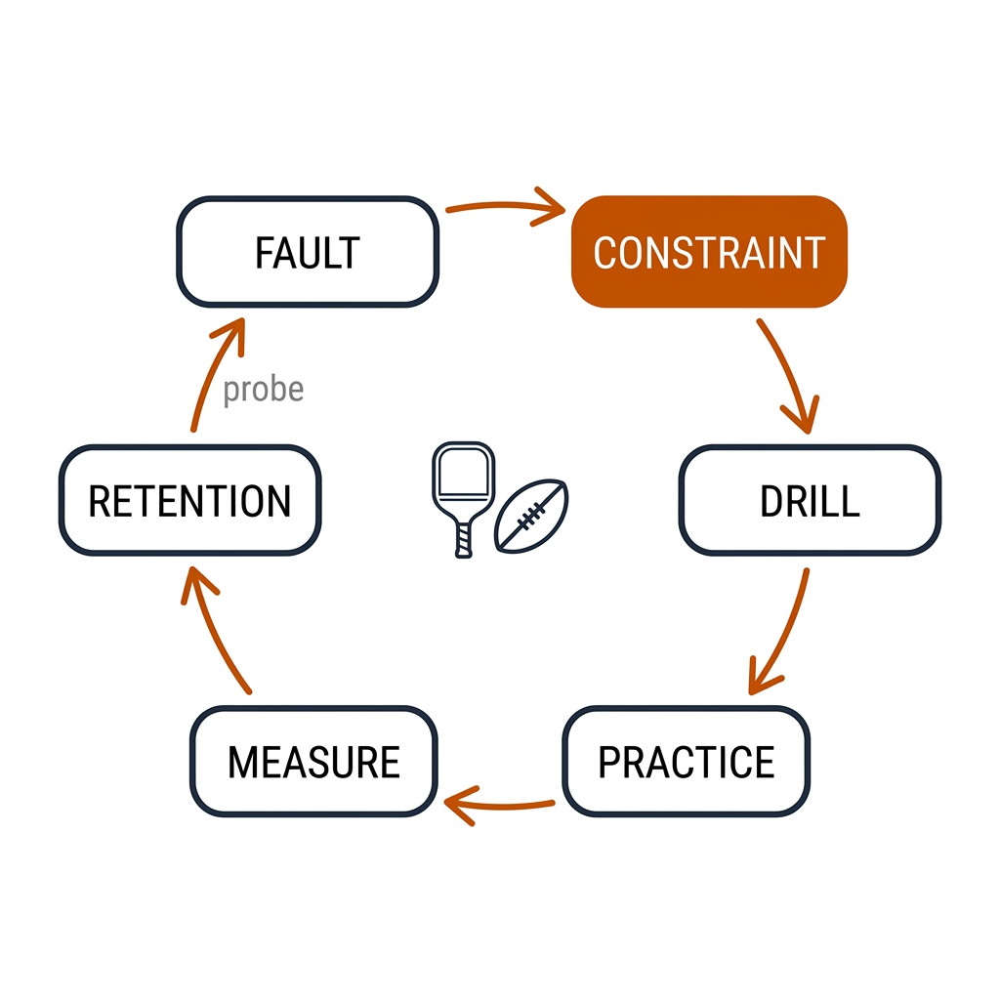
29.2 CLA/RLD: The Verified Foundations
Two frameworks carry the chapter, and both come with a 2024–25 health warning. The constraints-led approach (CLA) and ecological-dynamics literature has spent the last two years cleaning up its own hype, and the corrections are now part of the foundation:
- CLA is not a quick fix. It is an evidence-informed design frame, not a license to stop coaching. The 2024 practical-guidelines literature explicitly calls for research-informed practice and warns against over-simplification — the coach still selects, sequences, and measures.
- Do not mix CLA with command-style instruction in the same session. Blending constraint manipulation with direct technique cues confuses learners because the two pedagogies assume different control structures. An instruction delivered inside a constrained space cancels the discovery the space was built to produce.
- The coach is an environment architect, not a movement dictator. The practitioner's lever is the constraint — task, environment, individual; the athlete's job is to self-organize under it. A 2025 critical appraisal adds the discipline: ecological dynamics is useful when it produces testable practice designs, not when it becomes a post-hoc justification for any drill the coach already liked.
Newell's constraints triad (1986) is the design space the agent manipulates. Skill emerges from the interaction of three constraint families, and the drill generator must own all three boxes, not just "task":
| Constraint family | What the agent can change | Pickleball example | Rugby league example |
|---|---|---|---|
| Individual | Fatigue, load, readiness, skill level, injury history | Rest between reps, partner ability, pairing with video feedback | Position group, return-to-play stage, contact restrictions |
| Task | Rules, scoring, targets, opposition, time, numbers | Side-out scoring, 3-to-1 target game, NVZ-line start position | Set-of-six constraints, tackle-only practice, reduced numbers |
| Environment | Court dimensions, surface, wind, equipment, space | Smaller target, outdoor wind, ball pressure | Field zone, wet ball, reduced space, marked retreat line |
Representative Learning Design (Pinder, Davids, Renshaw & Araújo, 2011) supplies the quality bar: practice must preserve the specifying information of the performance environment. "Representative" does not mean "identical to a match"; it means the action-relevant information is still present, so the same decisions and movements arise — action fidelity, not surface realism, is the test. A pickleball kitchen drill played without the NVZ line's consequences is not representative, because the line is precisely the information that shapes the match fault. A rugby tackle drill against a passive bag is not representative, because the ball carrier's evasion is the information the defender must read. The chapter applies a four-point RLD checklist to every drill the agent emits:
- Does the drill still require the athlete to read the same specifying information as the match fault — a real opponent, real ball flight, real court or field geometry?
- Is the movement solution constrained but not prescribed?
- Can the athlete still produce the match error pattern? If the drill is too easy, it cannot address the fault.
- Is the drill harder than the match in the targeted dimension, but not so hard the athlete abandons the skill?
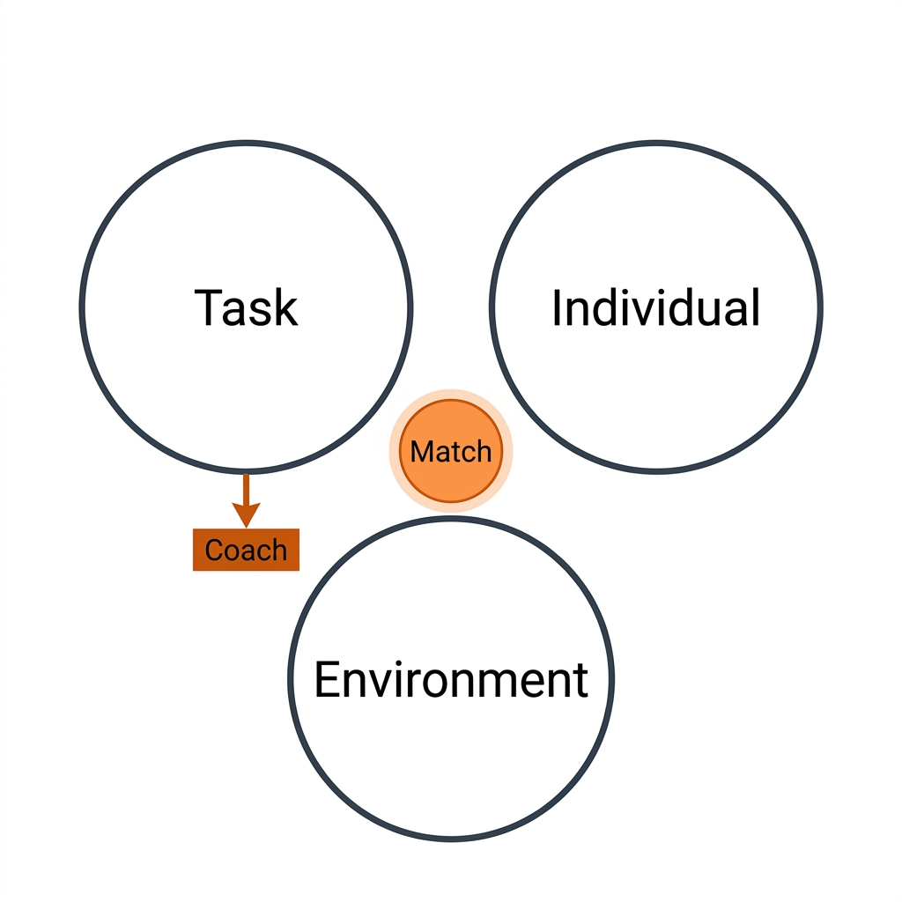
Differential learning (Schöllhorn) completes the trio: variability is the learning signal. Instead of repeating one ideal movement, the practice adds stochastic perturbations to every repetition, exploiting natural movement fluctuation plus controlled noise. The agent operationalises this as a "never the same drill twice" generator: every recipe is a family of variations around the constraint the fault points to — the pickleball 3-to-1 target game rotates target depth (1.8 m, 2.1 m, 2.4 m) and width across reps; the rugby line-speed drill rotates the play-the-ball speed and the attacking shape. The variation is not randomness for its own sake; it is a search across the solution space the constraint leaves open.
The stance on instruction is precise, not ideological: direct instruction is appropriate for rules, safety, and the constraint itself; it is not appropriate for prescribing body mechanics. "The ball must land in the 2.1 m depth target" is a legitimate instruction. "Extend your elbow and follow through" is not — it converts the athlete into an executor of the coach's movement model and invites reinvestment under pressure (§29.3). The one exception is the single external-focus cue or analogy, which constrains attention, not joint angles: "brush sand off the table" for the pickleball dink, "cheek to cheek" for the rugby tackle.
29.3 The Feedback Science: What the Meta-Analyses Say
The guidance hypothesis is NOT supported by the 2022 meta-analysis. The classic claim (Salmoni et al., 1984) — high-frequency feedback helps practice performance but degrades learning through dependency — failed to replicate across 61 studies: no significant degradation effect, and the authors concluded that robust evidence on feedback frequency is lacking. The practical consequence is stark: do not dogmatically throttle agent feedback to "fade" it. A feedback policy built on a scheduled reduction is built on a result the field no longer holds. The evidence-supported mechanisms are these four:
- Self-controlled pull (Chiviacowsky & Wulf, 2005): feedback is more effective when the learner decides after a trial whether to receive it, because the decision itself engages error-estimation processes. Post-trial self-control beats pre-trial, which beats yoked schedules. The UX consequence is a "request feedback" button on the athlete app — the pull is the learning cue, and autonomy is a learning variable, not a UX nicety.
- Bandwidth silence (Sherwood, 1988): feedback only when performance falls outside a tolerance band improves movement consistency on retention tests. The agent's default is quiet-by-default: inside the band, say nothing. The band is not a global setting; it is a per-skill tolerance derived from the athlete's own recent baseline — a 3.5-level pickleball player's dink-height band is narrower than a beginner's, and a rugby winger's line-speed band differs from a middle forward's.
- Retention probes (Schmidt & Lee): practice performance is not learning; learning shows only in delayed, no-feedback retention or transfer tests. The agent schedules probes — a session with no feedback, a delayed test 48 h or two weeks later, a transfer condition against a different opponent or on a different court. A drill that improves in-session but disappears on the probe is not a learning success.
- External focus under pressure (Wulf's 15-year review; Masters' reinvestment programme): cues directed at the effect of the movement beat cues about the body, and under pressure internal focus triggers reinvestment — conscious step-by-step control that breaks automatic skills. Masters' analogy learning — one biomechanically informed metaphor that hides the rule list — produces learning rates similar to explicit instruction with better retention under pressure. The canonical example is a table-tennis topspin taught as "draw a right-angled triangle with the bat."
The agent's cue library therefore has two lanes. Training week: discovery, constraints, variability, self-controlled video. Competition week: single external-focus cue or analogy, bandwidth silence, no mechanics. The pickleball player gets "push the ball through the kitchen window" on match day and the full constraint drill on Tuesday; the rugby league edge defender gets "cheek to cheek, win the shoulder" on match day and the tackle-technique circuit (§29.4c) midweek.
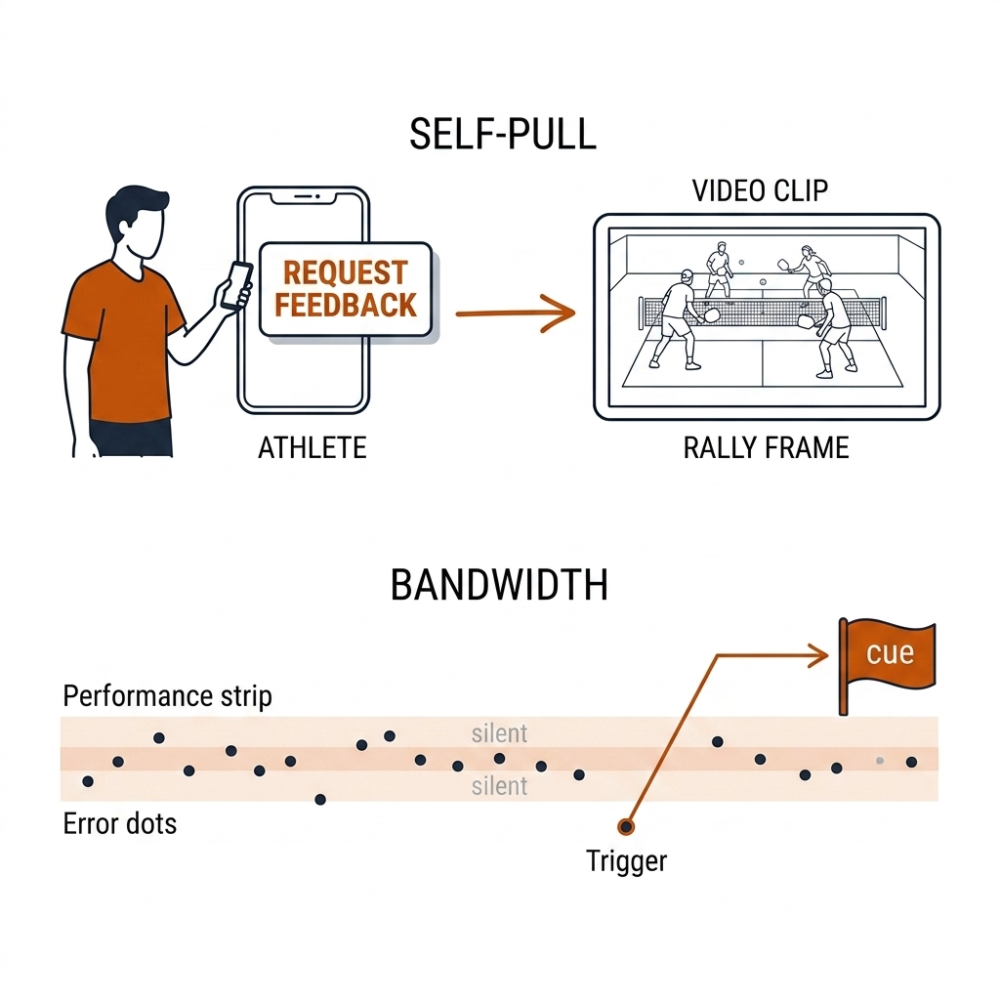
The design rules, condensed:
| Situation | Agent behaviour | Why |
|---|---|---|
| In-session, inside tolerance | Silence | Bandwidth feedback preserves attention (Sherwood) |
| Athlete requests feedback | Clip + one external cue | Self-controlled pull engages error estimation (Chiviacowsky & Wulf) |
| Technique fault in training | Constraint suggestion + video model | CLA + observational learning |
| Same fault under pressure | One analogy or single external cue | Prevents reinvestment (Masters) |
| After a match | Terminal, 8–12 clips, one message | Coach–analyst translation beats volume |
| Retention probe | No feedback, measure only | Learning only shows here (Schmidt & Lee) |
29.4 The Fault → Constraint → Drill Algorithm (W7.2 Lab)
The pipeline binds the coaching science to the perception stack. Faults are derived from reviewed C19 event rows, not from raw movement facts — a fault must be a stable, actionable pattern, not a one-off error:
C19 event rows (movement facts, review windows, contact events)
→ fault detector (rule + calibrated ML over reviewed rows)
→ constraint matcher (task / environment / individual families)
→ drill library lookup (skill level, equipment, load budget)
→ drill recipe (constraints, representative conditions, probes, review flag)The fault taxonomy differs by sport but the row shape does not. Pickleball faults ride on ball-track and pose evidence; rugby league faults ride on possession outcomes:
| Fault tag | Required evidence | Example |
|---|---|---|
third_shot_drop_too_high | Ball track + contact anchor + height/depth estimate (C12) | Drop lands attackable inside the NVZ |
late_ready_position | Pose track (C11) + foot-contact timing (E10) | Still rising from ready stance when the serve arrives |
popped_dink | Contact anchor + ball exit angle/speed | Dink leaves the net area above knee height |
slow_play_the_ball | C19 ruck rows + tackle-event timing | PTB duration above the athlete's band, repeatedly |
defensive_line_short | C07-calibrated positions at the PTB instant | Defence inside 10 m on 9 of 34 play-the-balls |
missed_tackle_width | Tackle events + track geometry | One-on-one misses on edge runners |
The lab's library (from metrics.json, measured against the current evidence — the kitchen foot fault from the PBN rows), applied through the matcher:
| Fault | Constraint (the coach's lever) | Drill (the environment) |
|---|---|---|
| Kitchen foot fault | Volley only from behind the NVZ line (the line is an invisible wall) | 3-court NVZ awareness: volleys where the kitchen line is taped; the athlete's job is to volley without crossing it |
| Third-shot drop misplaced | Drop must land in the kitchen (the drive is not an option this session) | Baseline 5–8 m drop to the target zone; score the landing, not the power |
| Defensive retreat slow | Return to the baseline before the opponent's contact (a time gate) | Reaction drills with a trigger; the retreat within the time budget |
| Defensive line short (rugby) | Line must be 10 m from the PTB when the ball is played (marked line + time gate) | 5v5 line-speed: six-tackle sets where the retreat is timed and the attack profits from every metre of lateness |
The circuit rule: the constraint is the coach's lever; the discovery is the athlete's. The fault is identified from C19 event rows (the evidence), the constraint maps to it (the library is the seed), and the drill is the constrained environment. Each recipe is a row in a versioned library:
drill_id: p-c29-001
fault_tags: [third_shot_drop_too_high]
constraint_family: task
constraints: [target_depth=2.1m, scoring=3-to-1, opponent=live]
representative: true
skill_level: 3.0-4.0
variations: [target_depth=1.8m, target_depth=2.4m, target_width=0.9m]
retention_probe: 48h no-feedback test on same target
load_budget: 15 min / 120 contacts
review_flag: false
source: C19 review window + human coach tagThe review_flag is the honesty mechanism: it goes true when the fault-to-constraint match has low confidence — a fault that requires C12 ball evidence the pipeline did not produce, or a C11 pose metric captured out-of-plane. The prescriber is intentionally conservative:
def prescribe(c19_rows, athlete_state, drill_library):
faults = detect_faults(c19_rows) # rule + reviewed ML, per C19
recipes = []
for fault in faults:
constraint = match_constraint(fault, athlete_state)
candidates = drill_library.lookup(fault.tag, constraint.family,
athlete_state.skill_level,
athlete_state.load_budget)
if not candidates or candidates[0].confidence < 0.7:
recipes.append(ReviewQueueItem(fault, constraint)) # human first
else:
recipes.append(candidates[0].add_variation().set_retention_probe())
return recipesA low-confidence match is not a guess; it is a queue item for the human coach, with the evidence attached. The agent that silently guesses a constraint from thin evidence is worse than no agent, because the drill will be executed with full commitment against a possibly wrong diagnosis.
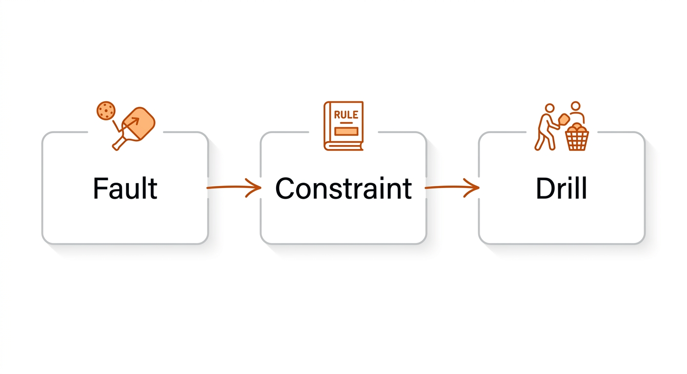
29.4b The Pickleball Drill Library: Three Worked Recipes
Three drills carry the pickleball side of the chapter. Each is written as a constraint environment, each maps to a C19-observable fault, and each embeds a retention probe and a load budget.
1. The 3-to-1 target game (fault: third-shot drop too high / drive-drop selection). The attacker at the baseline has three attempts to land the drop in a 2.1 m depth target inside the kitchen; the defender at the NVZ attacks every ball that lands long or high. Scoring is 3-to-1 — the attacker needs three target landings to earn one point; the defender scores on every attackable ball. The constraint is the scoring asymmetry plus the live defender: the drop's margin for error is now exactly the match's margin for error, because the punisher is present (RLD checklist item 1). Variations rotate target depth and width (differential learning). Retention probe: 48 h later, same target, no scoring announced, measure landing distribution from C12 ball tracks. Load budget: 15 minutes, ~120 contacts.
2. The delayed-start dinks (fault: late ready position / slow transition spacing). At the kitchen line, the feeder holds the ball visibly and releases on a self-chosen delay; the receiver may not set into the ready stance until the feeder's arm moves. The constraint is a time gate on preparation: the athlete must reach a stable ready position in the window between arm-move and ball arrival — the same window C19 measures between the opponent's contact and the receiver's first movement in match rows. The discovery is the athlete's own pre-stance organisation; the coach never cues "get lower." Variation: the feeder mixes dinks and speed-ups so the receiver cannot pre-decide. Probe: next session, measure reaction window against the athlete's own baseline band — inside the band, silence.
3. The volley shoulder-only chain (fault: popped dink / wristy volley under pressure). Volley exchanges at the NVZ with the wrist locked by the task constraint: any ball that leaves above knee height is a point against, regardless of outcome. The single permitted cue is the analogy "brush sand off the table" — an external-focus metaphor that constrains attention to the paddle's path effect without prescribing joint angles (the Masters lane). Video replay is available on pull only. The drill chains directly into the 3-to-1 game so the recalibrated contact height is immediately tested under defensive pressure — the interleaving that §29.5's retention evidence wants.
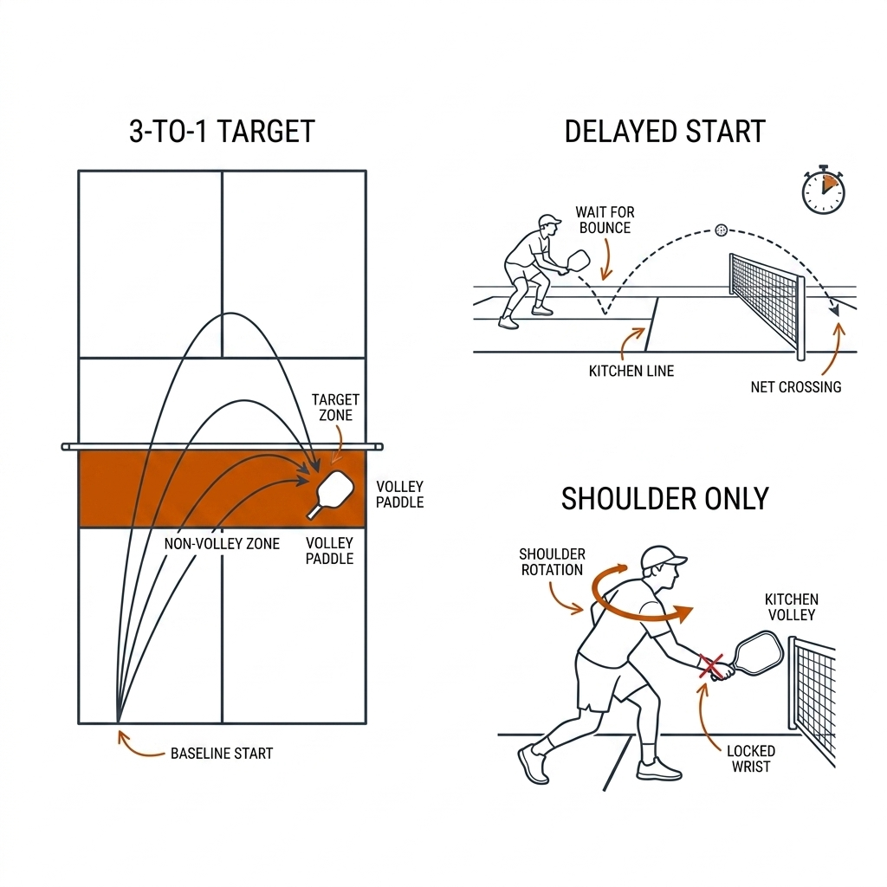
29.4c The Rugby League Drill Library: Three Worked Recipes
The rugby side runs the identical pipeline against contact-sport faults, with one hard rule inherited from C31: contact volume is an individual-constraint input, never an afterthought — every tackle drill carries a per-athlete contact budget from the load monitor (§29.7).
1. The 5v5 line-speed drill (fault: defensive line short / slow off the line). Five defenders on a marked 10 m retreat line, five attackers playing six-tackle sets at full intent. The constraint is the time gate: the defensive line must be set at 10 m before the ball leaves the PTB, and the C07-calibrated tracking measures the gate on every play-the-ball. The attack's job is to profit from lateness — every metre the line is short is the attack's opportunity, so the punishment is structural, not verbal. Variations rotate PTB speed (the attacker playing fast off the ground is the perturbation) and field zone. Probe: next opposed session, line-speed statistics from C19 rows, no in-drill feedback carried over.
2. The tackle technique circuit (fault: missed tackle width / high-contact drift). Front-on and side-on tackle stations against live ball carriers at controlled speed, with the constraint on contact height: a legal-contact band is the scoring zone and anything above it ends the rep — the environment enforces the safety rule the coach must never have to shout. The single analogy is "cheek to cheek, win the shoulder." The welfare red line is explicit: tackle-classification outputs from chapter 19 set the operating point for policy (how many contact reps this athlete may take this week), never as a practice gate that benches a player on a screening score. Contact budget per athlete per session, logged against C30 wearable rows.
3. The ruck clean-out contest (fault: slow play-the-ball conceded / ruck speed lost). Tackled player on the ground, two defenders over the contest, one arriving attacker whose job is to win the ruck space fast enough for a sub-3-second PTB. The constraint is the contested zone itself: the defenders are coached to legally slow the ruck, so the attacker's solution — body height, entry angle, leg drive — must be discovered against real resistance. The time gate (PTB duration, measured from C19 tackle rows in matches) is the scoreboard. Variation rotates the number of defenders and the tackle type, because match rucks never repeat exactly (differential learning again: repeat the problem, vary the conditions).
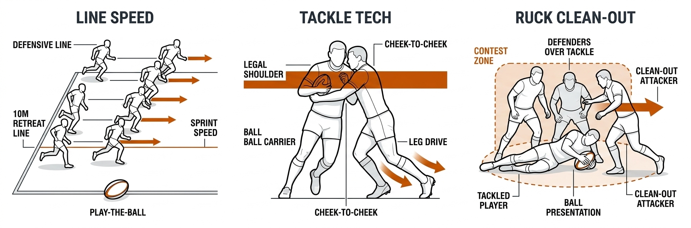
29.4d The Ten Use Cases: Diagnosis → Drill Mapping
The drill libraries above are recipes; this section is the applied framework that binds each recipe to the diagnosis that triggers it. Ten use cases in four categories: A — The Pickleball Kitchen Game (UC 01–02), B — The Pickleball Transition & Serve Game (UC 03–04), C — Rugby League Defensive Shape & Contact (UC 05–07), and D — The Meta-Layer: Feedback, Transfer, Review (UC 08–10). Each case follows the same five parts: the practical problem, the constraint mechanism with its design math, a figure, the dual-sport application, and the payoff. Evidence labels are carried per case: measured where the book lab has numbers, source-backed where the coaching-science literature carries the claim (§29.12), and [verify] where the mapping is a practitioner model awaiting validation (§29.11).
Category A — The Pickleball Kitchen Game (UC 01–02)
UC 01 — The Kitchen Firefight Drill
The problem. Hands battles at the NVZ are decided in under half a second, and they are lost by the player who blinks first — almost always by popping one ball up above the knee. Club players lose these exchanges because they train volleys statically, one fed ball at a time, while the match fault is produced by speed: the C19 review rows show the popped ball arriving on the third or fourth contact of a fast exchange, not the first — a drill that never reaches firefight tempo cannot reproduce the fault (RLD checklist item 3).
The mechanism. Both pairs start at the NVZ line; the coach feeds the first ball at chest height and the rally is volley-only until it resolves. The constraint is environmental: any ball leaving a paddle above the knee-height band — h_contact ≤ h_knee ≈ 0.5 m from the C11 pose track — is a point against, regardless of who wins the rally. The pop-up is punished by the scoring, never by a shout. The challenge-point governor scales the feed speed: success above ~80% and the next feed comes harder; below ~40% it slows. Pickleball: this is the native habitat of the popped_dink and attackable-volley faults. Rugby league: the analogue is the goal-line defensive scramble — repeated high-speed efforts in a confined space under a contact band, likewise enforced by scoring, not voice. Payoff: the popped-ball rate on C19 firefight rows is the outcome measure; the coach gets a drill that punishes exactly the ball the match punishes. [verify — practitioner default band.]
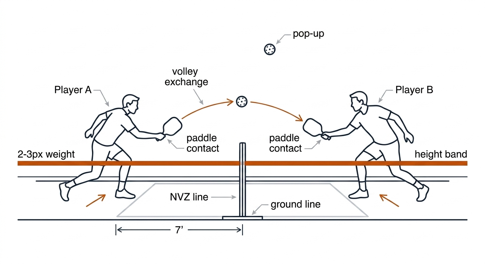
UC 02 — The Dink Fidelity Drill
The problem. Most dinks that lose rallies are not errors into the net — they are dinks that are in but attackable, crossing the tape high enough to be volleyed down. The fault is invisible to the player because the ball landed; it is visible in the data because the apex cleared the tape by more than the attack threshold.
The mechanism. Cross-court dink rallies where only balls passing through a phantom window score: apex ≤ tape + 0.3 m, measured from the C12 ball track. The window is the constraint; nothing about the swing is prescribed. Bandwidth silence applies with full force — the agent says nothing while the apex distribution sits inside the athlete's band (§29.3), and speaks only when it drifts. Differential learning rotates the pattern — cross-court, straight, moving receiver. Pickleball: the apex window converts the vague instruction "keep it low" into a measurable environment. Rugby league: the same apex-window logic governs the attacking grubber into the in-goal — the kick must stay under the reach line and die in the zone; trajectory, not style, is priced. Payoff: the dink-apex distribution tightens measurably, and the retention probe (48 h, no window announced) is the honest test. [verify — 0.3 m window pending lab validation on pb-003 ball tracks.]
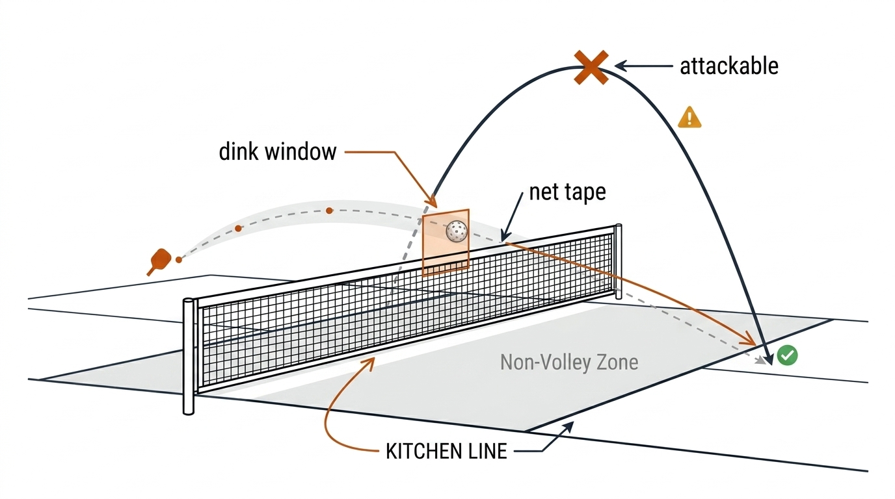
Category B — The Pickleball Transition & Serve Game (UC 03–04)
UC 03 — The Third-Shot Drop Drill
The problem. The third shot is where rallies are structurally decided in pickleball: the serving team starts pinned at the baseline and must buy its way to the NVZ with one ball. The C22 ΔEPV boundary prices the decision — the drop carries positive expected value against a set defence where the drive carries negative [verify — C22 numbers are the lab's current estimate] — and the fault tag third_shot_drop_too_high fires when the drop lands attackable on C12 ball evidence.
The mechanism. The 3-to-1 target game of §29.4b is the drill; the mapping is the use case. Fault → task constraint: the drop must land in the depth window 1.8–2.4 m inside the NVZ line; scoring is asymmetric (three target landings to earn a point; the live defender scores on every attackable ball); the drive is removed from the option set this session — a task constraint that forces the search into the drop's solution space. The live defender is what makes the drill representative: the practice margin is now the match's margin. Variations rotate window depth and width; the probe is a no-scoring session measured on landing distribution alone. Pickleball: native. Rugby league: the last-tackle kick into the in-goal runs the identical logic — a landing window, a live chaser punishing every kick that sits up, and the run-it alternative removed from the option set. Payoff: the third-shot decision quality shows up in C22 ΔEPV terms on the next match.
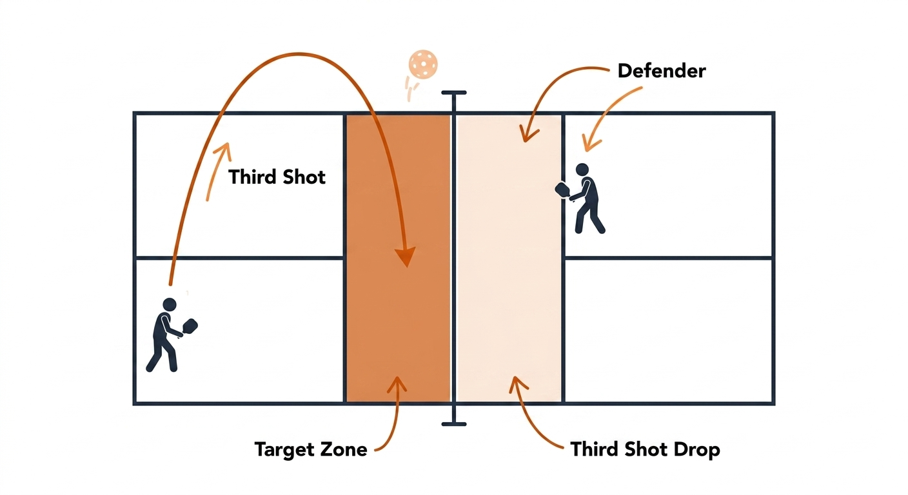
UC 04 — The Serve-Return Depth Drill
The problem. The return of serve decides who reaches the NVZ first, and the deciding variable is depth: a return landing short invites the drive and traps the returner in the transition zone. The fault reads from C19 rows as return depth plus the returner's position at the opponent's third-shot contact — still short of the line when the ball arrives. Players practice returns for safety ("get it in") when the match prices depth.
The mechanism. A cooperative-competitive serve-plus-return game with a depth window both ways: the return must land beyond a deep-window line 1.5 m inside the baseline (depth read from the E11 court polygons), and the server is penalised for serves landing short of the same window — both sides constrained to the match-relevant depth. A second constraint is the time gate: the returner must cross the transition zone before the third shot is struck, the same window C19 measures between contacts in match rows. Scoring is 2-to-1 in favour of deep returns to make depth, not safety, the priced behaviour. Pickleball: native to the serve–return–third-shot sequence. Rugby league: the kick-off reception set is the structural mirror — the return metres and the first PTB decide where the set starts, and the chase team's pin inside the 20 m runs the same depth logic from the other side. Payoff: transition-zone position at the third shot, measurable directly from tracks; the drill reprices the return from "in" to "deep." [verify — 1.5 m window is a practitioner default.]
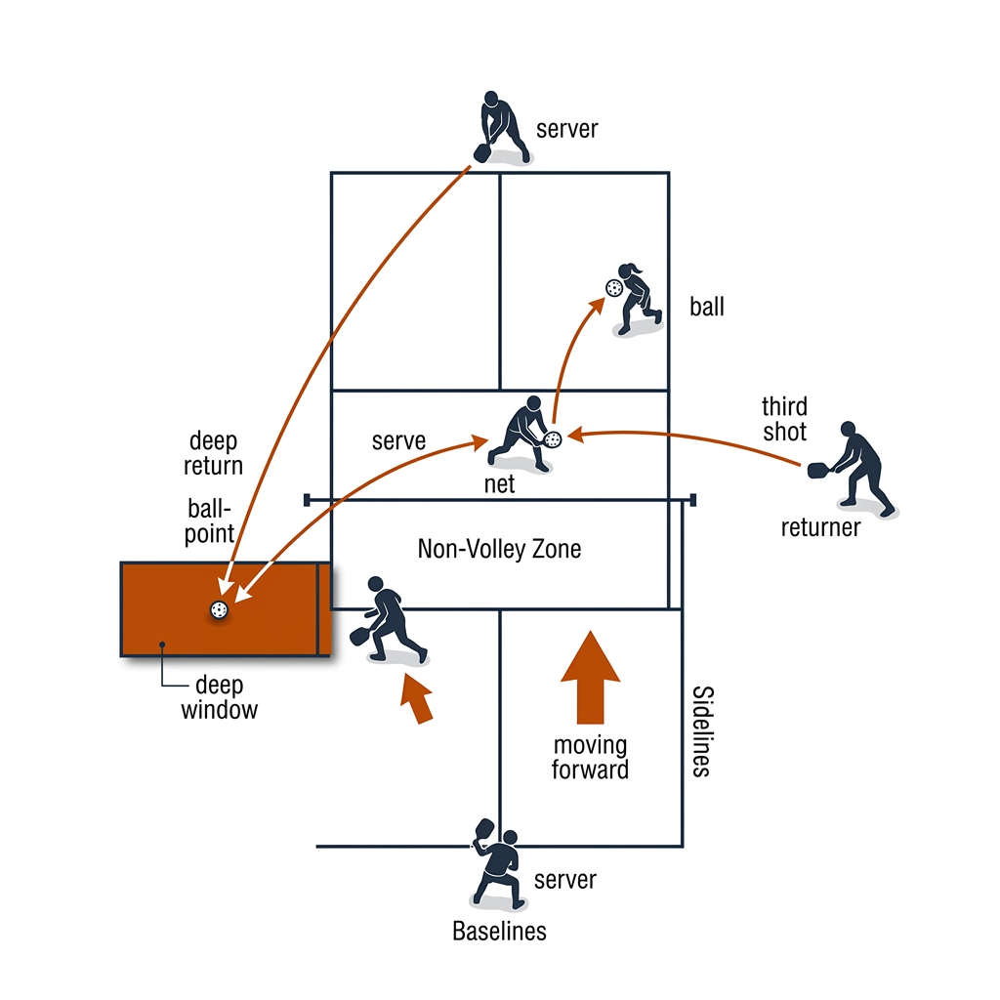
Category C — Rugby League Defensive Shape & Contact (UC 05–07)
UC 05 — The Line-Speed Drill
The problem. The rugby league defence's currency is metres: every play-the-ball the line is short of the 10 m is metres gifted to the carry. The lab's fault row reads it directly — defensive_line_short: the C07-calibrated positions at the PTB instant show the defence inside 10 m on 9 of 34 play-the-balls (measured). The CLA answer to the "get back" shout is an environment where lateness costs.
The mechanism. The 5v5 line-speed drill of §29.4c: five defenders on a marked 10 m retreat line, the attack playing six-tackle sets at full intent, and a time gate as the binding constraint — t_gate = d / v, the line must be set at d_line ≥ 10 m before the ball leaves the PTB, with the sprint the only solution. The punishment is structural: the attack profits from every metre of lateness, so a short line is scored against by the game itself. Variation rotates PTB speed to keep the problem honest. Rugby league: native. Pickleball: the transition-zone retreat is the same time gate in miniature — getting from baseline to the NVZ before the opponent's contact, measured by the same C07 logic on the smaller court. Payoff: line-set rate (the share of PTBs with the defence at 10 m) is the outcome measure on the next match's C19 rows.
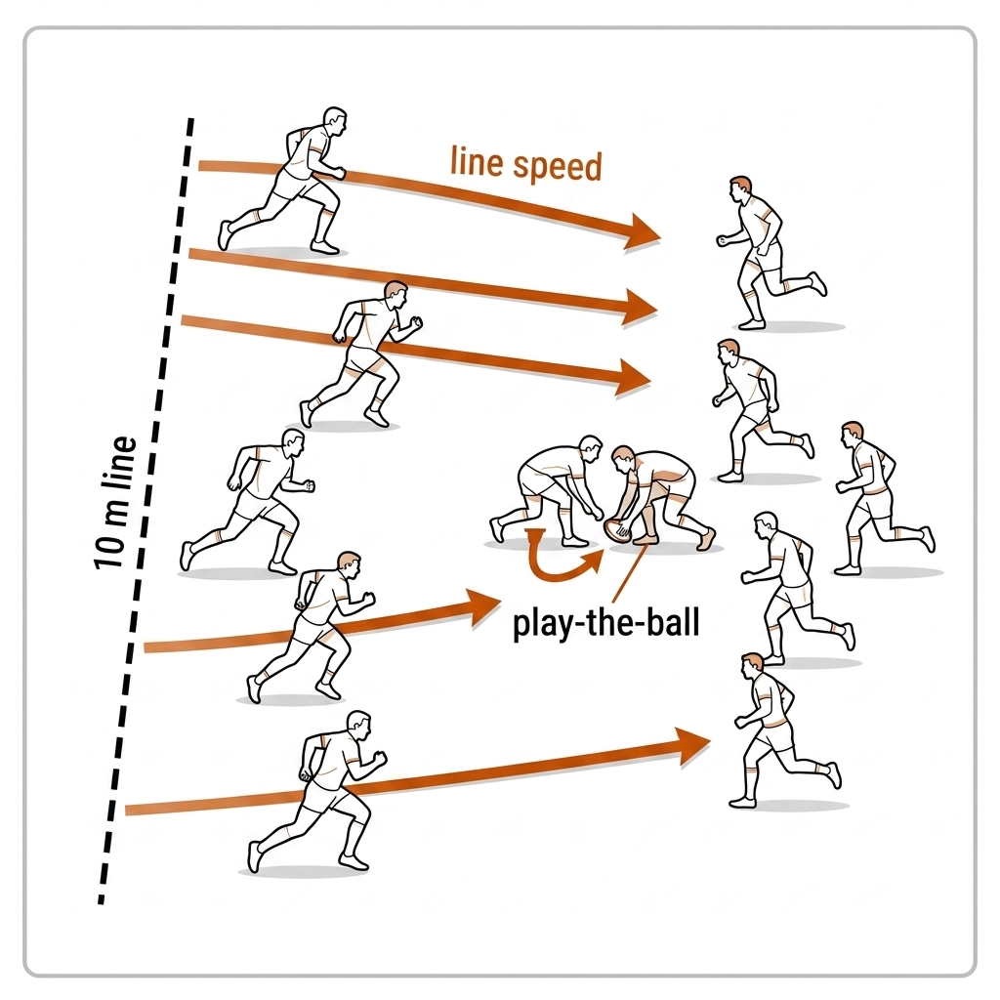
UC 06 — The Ruck Clean-Out Drill
The problem. Ruck speed decides the next play's shape: a slow play-the-ball lets the defensive line reset, and losing the ruck contest means a set played against a set line. The fault tag slow_play_the_ball fires when PTB duration sits above the athlete's band, repeatedly, on C19 tackle rows; the naive fix ("get up faster") is a mechanics shout, while the real problem is the contest itself.
The mechanism. The ruck clean-out contest of §29.4c: tackled player on the ground, two defenders legally slowing the ruck, one arriving attacker whose job is to win the space. The scoreboard is the time gate itself — PTB duration = t(ball played) − t(tackle complete), target sub-3 seconds [verify — practitioner benchmark, not a law of the game]. Body height, entry angle, and leg drive are discovered against real resistance; the coach sets the contest, not the technique. Differential learning rotates defender numbers and tackle type — match rucks never repeat. Rugby league: native. Pickleball: the structural analogue is tempo recovery after a speed-up — the resetter must absorb pace and re-establish the soft game within one contact — the same solve-the-contest-fast logic on a one-shot clock. Payoff: the PTB-duration distribution on match rows shifts left.
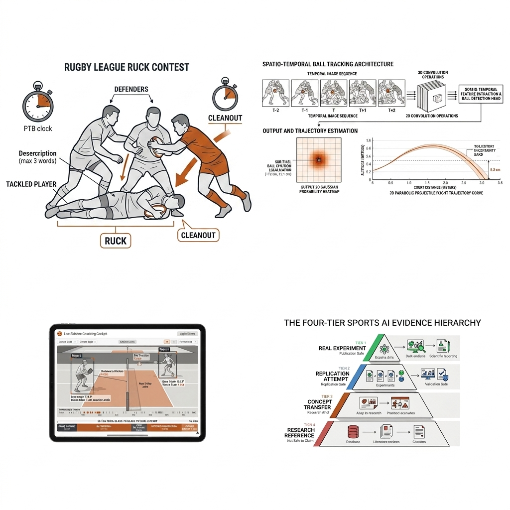
UC 07 — The Tackle Technique Drill
The problem. Missed one-on-one tackles on edge runners (missed_tackle_width) and the drift of contact height upward under fatigue are the two tackle faults that cost tries. Both are taught worst by commands about body position and best by an environment that enforces the legal, effective contact zone. The welfare constraint is not optional: every contact rep is a budget item, and chapter 19's classification sets contact policy — never a gate that benches a player on a screening score (§29.8).
The mechanism. Front-on and side-on stations against live ball carriers at controlled speed. The binding constraint is the legal-contact band as the scoring zone: any contact above the band ends the rep, so the environment enforces the rule the coach must never have to shout. The single permitted cue is the analogy "cheek to cheek, win the shoulder" — external focus, competition-week legal (§29.3). Contact volume per athlete per session is logged against the C30 wearable rows; the drill lives early in the week under the contact budget (§29.5). Rugby league: native, contact budget as the individual constraint. Pickleball: the analogue is the paddle-contact band of the shoulder-only volley chain — the scoring, not the coach, enforces the legal contact window, and the "no wrist" rule is built into what counts as a point. Payoff: missed-tackle rate on edge runners drops on C19 rows, and contact height stays legal under fatigue — the two numbers the welfare red line exists to protect.
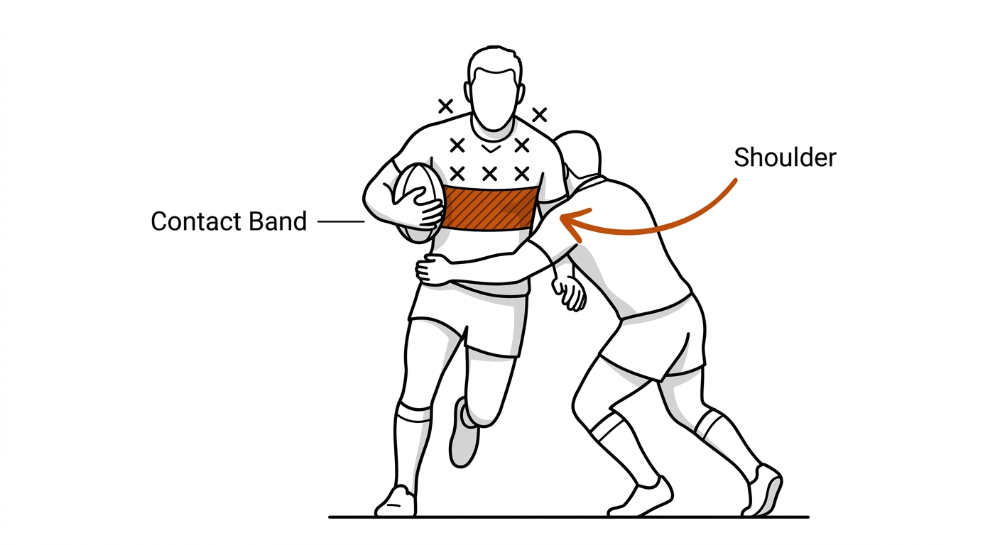
Category D — The Meta-Layer: Feedback, Transfer, Review (UC 08–10)
UC 08 — The Feedback Schedule: Self-Controlled Pull
The problem. An agent that talks after every rep trains dependency, and an agent faded on a schedule rests on the guidance hypothesis the 2022 meta-analysis of 61 studies could not confirm (source-backed: McKay et al.).
The mechanism. Two load-bearing rules (§29.3). Bandwidth silence: the per-skill tolerance band is computed from the athlete's rolling baseline — band = median ± k·MAD over recent sessions — and inside the band the agent says nothing (Sherwood, source-backed). Self-controlled pull: the athlete requests feedback post-trial, and the request itself engages error estimation (Chiviacowsky & Wulf, source-backed); post-trial pull beats pre-trial, which beats a yoked schedule. Frequency is an output of the athlete's stability, not a coach setting. Pickleball: the dink-apex band stays silent through a clean session and flags the drift. Rugby league: the line-speed band differs by position — a winger's band is not a middle forward's. Payoff: interventions become rare and therefore salient; request frequency becomes an engagement signal, and retention, not in-session polish, is the tuned metric.
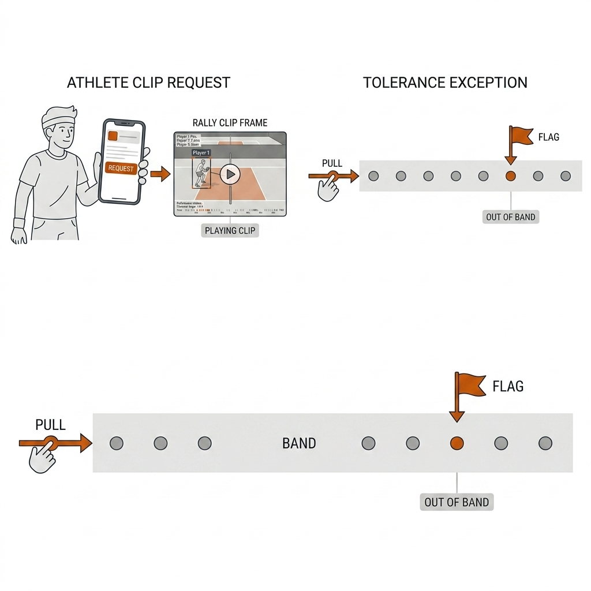
UC 09 — Practice-to-Match Transfer: The RLD Discipline
The problem. The most common failure of a drill programme is invisible in training: the drill improves and the match fault does not move. Blocked, decontextualised reps produce clean sessions and dirty Saturdays; the agent that schedules for same-day performance optimises the wrong panel of the crossover graph (§29.5).
The mechanism. The RLD checklist runs as an executable filter on every recipe the prescriber emits: specifying information present (live opponent, real geometry, real consequences), the match error pattern still producible, difficulty above the match in the targeted dimension only. The challenge-point governor keeps drill success inside [0.4, 0.8]; outside that band the constraint, not the athlete, is adjusted. Transfer is measured where it counts — the fault rate on the next match's C19 rows, not on drill scoring — and a drill that improves in-session while the match fault stands still is reported as a transfer failure, not a success. Pickleball: the 3-to-1 game keeps the live defender because the punisher is the specifying information. Rugby league: the 5v5 line-speed set at full intent replaces tackle-bag retreats because a bag cannot play the ball fast. Payoff: only representative drills survive the filter, transfer failures surface honestly within one match cycle, and the coach stops paying for practice that does not travel. Source-backed: Pinder et al. (2011); Guadagnoli & Lee (2004).
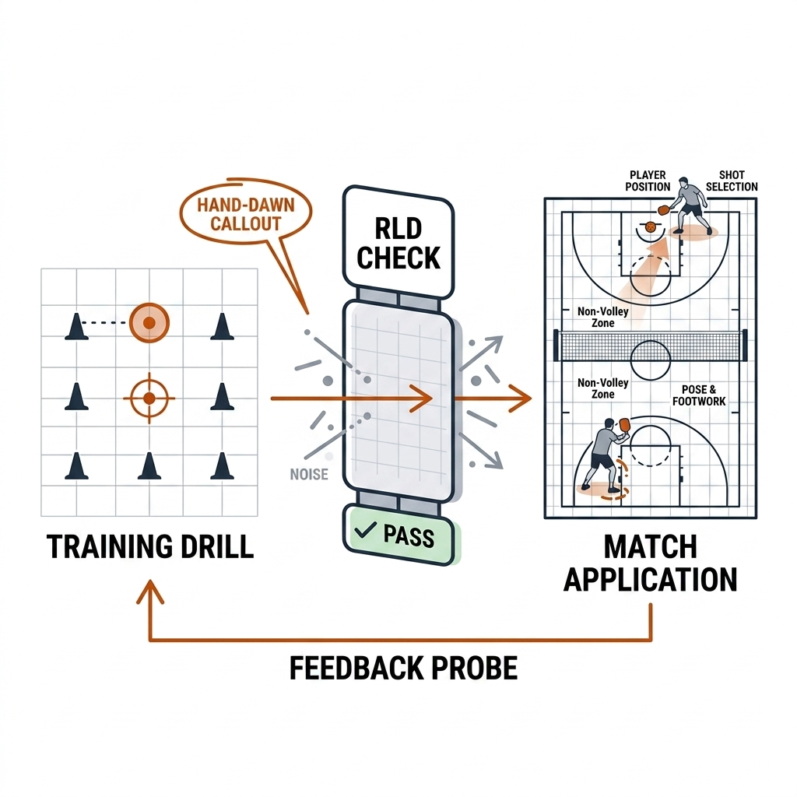
UC 10 — The Review Loop: Watch → Diagnose → Drill
The problem. The five-verb loop breaks most often at the joint between watching and acting: the analyst reviews film, the coach runs drills, and the two never bind — the drill chosen on Monday has no traced line to the fault observed on Saturday, and nothing measures whether it worked. This use case is the loop itself, treated as an engineered object with a latency budget.
The mechanism. The closed loop runs on a one-week cycle: C19 reviewed rows → fault detection (rule + calibrated ML) → recipe from the library (or the human review queue when confidence < 0.7, per §29.4) → constrained practice inside the load budget → retention probe → re-measurement of the fault rate on the next match. The design math: fault rate r_t vs r_{t+1} with a Wilson interval, unit of claim = athlete or session (C20), and a null reported as a null (§29.6). Every recipe carries its source back to the review window that produced it — the loop is auditable end to end. Pickleball: pb-003 rows → kitchen-foot-fault recipe → retention probe at 48 h (measured pipeline: experiments/c29-practice/outputs/metrics.json). Rugby league: nrl-001 rows → line-speed recipe → next-match line-set rate; the rugby fault library is the seed awaiting NRL-analyst validation [verify]. Payoff: the acting verb closes the loop the rest of the book opened — every drill traces to a match row, every match row can retire a drill, and the chapter's promise (evidence changing Tuesday morning) becomes checkable.
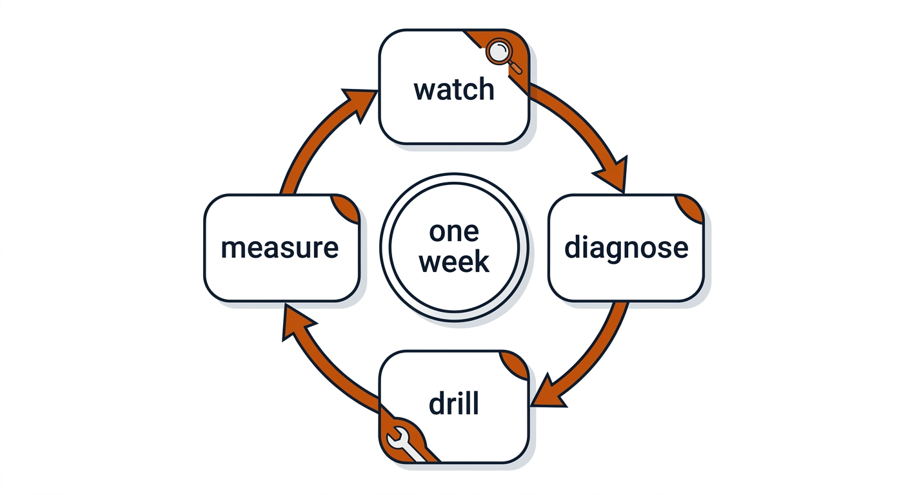
What the use cases add to the pipeline. None of the ten is a new project; each is the acting verb consuming earlier chapters' output. UC 01–04 spend C12 ball tracks, C11 pose timing, and the C22 ΔEPV prices; UC 05–07 spend C07-calibrated positions, C19 tackle rows, and C30 contact loads; UC 08–10 spend C20's honesty machinery and C28's live cockpit channel. The loop also runs backward: UC 09's transfer probes are the retention data §29.11 lists as missing, and UC 10's audit trail is what makes any drill in this chapter retractable when the evidence changes. That is the difference between a drill library and a practice system: the faults retire the drills, not the coach's habit.
29.5 Session Design: The Contextual-Interference Crossover
Blocked (drill A, drill A, drill A) vs random (drill A, B, C interleaved): the research is clear and counterintuitive — random practice is worse in-session and better at retention. Shea & Morgan (1979) is the canonical demonstration: the random-practice group underperformed during acquisition and outperformed on retention and transfer. The crossover is the core teaching point: the practice that looks better today is often the one that learns less. The agent's scheduler must therefore optimise for the retention probe, not for same-day performance — a session that looks ragged on Tuesday and holds up on Saturday beats a session that looked clean on Tuesday and evaporated.
Interleaving is a continuum, not a law. Blocked practice has a legitimate role in early acquisition and in confidence repair; serial and mixed schedules suit complex skills that cannot be learned from single trials. The lever the agent actually pulls is the challenge point (Guadagnoli & Lee, 2004): learning is maximised when functional difficulty matches the learner's current skill. Operationalised: if the athlete succeeds on more than ~80% of drill reps, increase difficulty (shrink the target, speed the PTB, add a defender); below ~40%, decrease it. The challenge point is measured from the drill's own scoring, so the progression is dynamic rather than a fixed six-week ladder.
The week shape maps the continuum onto the training microcycle, identically in both sports:
| Phase | Goal | Session design | Feedback mode |
|---|---|---|---|
| MD-4 / MD-3 | Acquisition + load | Mostly blocked or serial, then small interleaving | Self-controlled pull, constraint cues |
| MD-2 | Transfer under pressure | Random / interleaved, variable conditions | Single external cue, analogy |
| MD-1 | Match-representative | Representative games, small-sided, full rules | Minimal; bandwidth silence |
| Match day | Performance | The match | Safety/positioning cues only |
| MD+1 | Recovery / review | Light, varied, no pressure | Video review, no corrections |
For the pickleball club player the "match day" is the weekend ladder or tournament; the same week-shape applies with the 3-to-1 game living at MD-3 and a representative doubles game at MD-1. For the rugby squad the morphocycle is literal: contact days early in the week under the contact budget, line-speed transfer midweek, and a near-silent captain's run at MD-1.
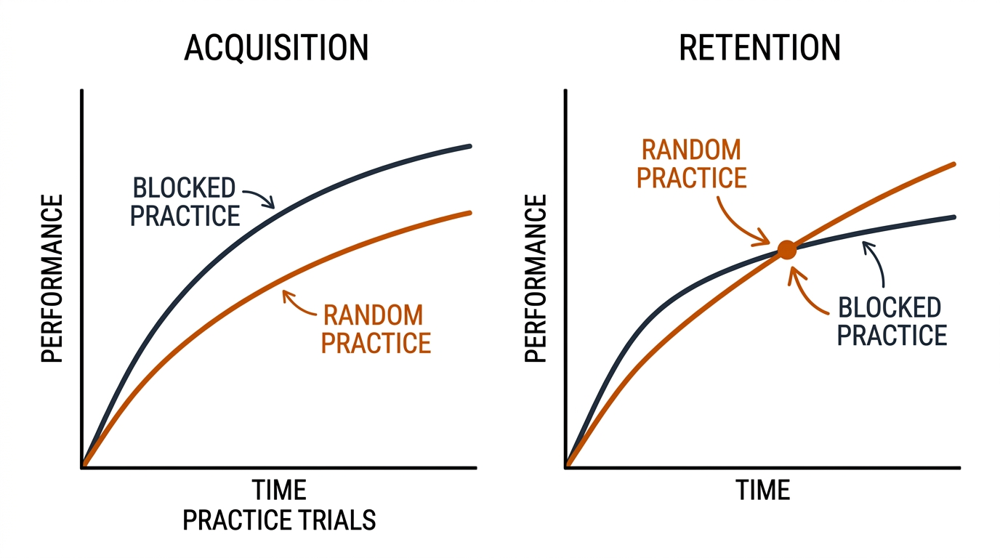
29.6 Measuring the Intervention
The C20 discipline applies to practice as strictly as to models. Every intervention claim carries the honesty contract: point estimate, interval, baseline, n, unit of claim, resampling method, and failure case. The unit of claim for a practice intervention is almost always athlete or session, never rep or frame — 120 drill contacts from one athlete are one cluster, not 120 data points.
The honest design for a six-week block:
- Outcome measure: a skill-specific test tied to the fault — pickleball third-shot drops landing in the 1.8–2.4 m depth window from C12 ball tracks; rugby PTB duration or line-set distance from C19 rows.
- Baseline: two to three pre-test measurements before the block, no feedback during measurement.
- Control skill: a similar skill the intervention does not target — serve in-rate for the pickleball study; kick chase distance for the rugby study — to rule out generic maturation and motivation.
- Post + delayed post: same test, same conditions, no feedback; repeat at 48 h and, if feasible, two weeks.
- Analysis: paired cluster bootstrap over athletes/sessions; effect size (Cohen's d, or Cliff's δ for skewed counts); Wilson or beta-binomial interval for success rates.
When n is small — the normal state in sport — single-case experimental designs are more honest than pseudo-group statistics:
| Design | Structure | Use case |
|---|---|---|
| A-B | Baseline → intervention | Quick pilot; weak causal inference |
| A-B-A | Baseline → intervention → withdrawal | Stronger evidence the intervention caused the change |
| Multiple baseline | Staggered baseline lengths across athletes | Best small-n design for coaching; controls history and maturation |
The chapter's replicable mini-study template, ready to run on pb-003 footage plus local players:
Title: Does a 2.1 m target constraint improve third-shot drop depth?
Athletes: 4-8 pickleball players, same skill band
Design: Multiple baseline across athletes, A-B
Baseline: 2 weeks regular practice + retention probe
Intervention: 6 weeks, 2x15 min/week of the 3-to-1 target game
Outcome: % of drops landing 1.8-2.4 m inside the NVZ, from ball track
Control: Serve in-rate (untargeted skill)
Retention: 48 h and 2-week no-feedback probes
Analysis: Tau-U + SMD per athlete; hierarchical beta-binomial summary (C20)
Null rule: Reported as a lesson: "the constraint did not transfer; next experiment."A null result is a lesson, not a failure. If the interval includes zero, the correct output is not a smaller p-value or a different drill chosen at random; it is a revised hypothesis — the fault was misidentified, the constraint was too easy, or the transfer test was not representative. The same template runs in rugby league with PTB duration or missed-tackle rate as the outcome and the line-speed drill as the intervention.
29.7 Load & Athlete Monitoring
Practice design consumes load data; it does not produce medical decisions. The two load families: internal load — sRPE (session RPE × duration on the CR-10 scale), the cheapest validated metric, capturing the athlete's subjective response to the work; and external load — GPS/IMU measures in rugby (distance, high-speed running, accelerations, impacts) and the pickleball equivalents (step count, wrist/watch acceleration, court coverage from the C05/E05 tracks). Readiness — sleep, soreness, fatigue, mood — provides daily context, and is useful only with individualised baselines and deviation flags, not squad averages. The wearable data (C30) joins this chapter via the C05 spine.
The ACWR caveat box (mandatory): the acute:chronic workload ratio is a contextual indicator, not an injury predictor. The 2025 systematic review and meta-analysis of 22 cohort studies confirms the association — injury incidence minimised when ACWR stays within 0.8–1.3 and elevated risk (roughly 2–4×) above ~1.5 — and the same literature insists on the repositioning. Every time the agent displays ACWR it must display the caveats with it:
- Association, not causation. ACWR measures correlation; it does not predict an individual injury.
- Coupled bias. Acute and chronic workloads share the same numerator; they are not mathematically independent.
- Arbitrary windows. The 7- and 28-day windows are conventions, not biological constants.
- Heterogeneity. Effect sizes vary across sports, positions, and load metrics — the meta is mostly running-based team sports; pickleball-specific ACWR numbers do not yet exist.
- Individual differences. A squad average can hide one athlete who is spiking.
- Single-session spikes matter. A 7-day average can miss one extreme session; spike monitoring relative to the athlete's prior 30 days is a serious alternative, as are per-athlete ML baselines.
Load is a session-adjustment input, not a gate. High ACWR plus poor readiness → reduce drill volume or swap high-impact constraints for low-impact ones (film review, walk-through reps, the dink-height band drill instead of the contact circuit); normal load plus good readiness → proceed as planned; missing load data → flag the gap, proceed on self-reported RPE, never hide the missingness. In rugby the caveat applies with more force because the injury mode is the contact load, not the running load — an ACWR built only on metres run is blind to the tackle count, so the rugby integration must join the C30 impact rows to the ratio before it means anything.
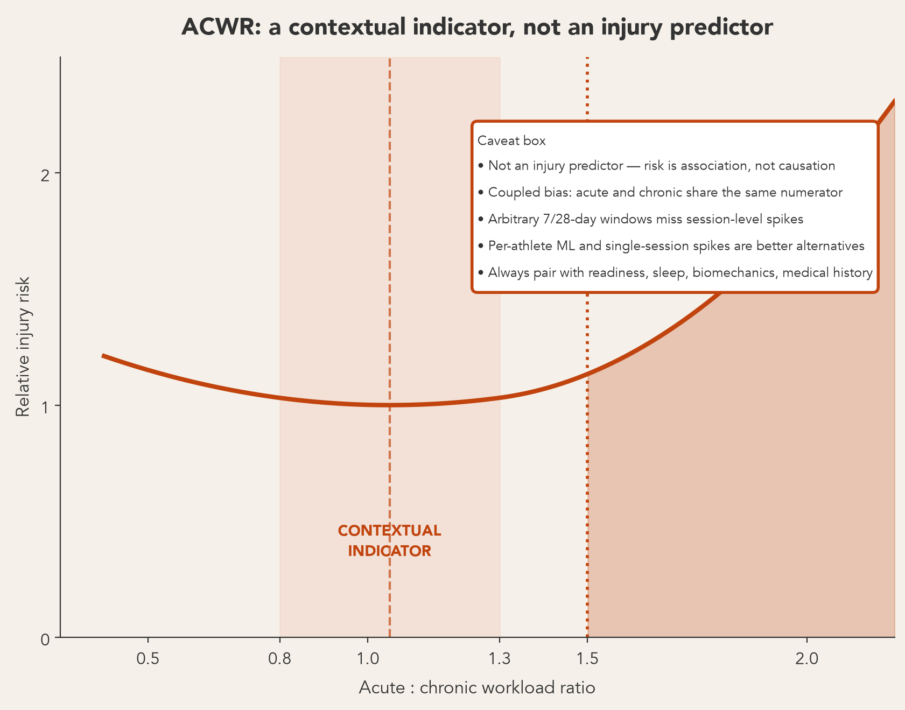
29.8 The Red Lines
- No force/torque claims from monocular video (chapter 11). Ground-reaction forces, joint torques, and injury-risk indices are not defensible from a single camera; a practice prescription grounded in "3D-inferred forces" is not grounded. The agent can recommend a drill based on a recurring fault; it cannot claim the athlete is at injury risk because of a video-derived metric.
- Never gate athletes on screening scores. The Bath screening sensitivity (~68% [verify against the final C11 numbers]) means a false gate is a real possibility; the correct output of any risk-flavoured flag is a flag for a qualified human with evidence and caveats attached. The human makes the participation decision.
- Never prescribe injury rehab. Return-to-play is criteria-based and clinical: medical clearance plus the chapter 31 boundary. The agent may supply load data, readiness context, and drill options; it cannot clear, diagnose, or treat.
- No causal claims from observational match data. A fault observed in match footage is associated with the outcome, not proven to cause it. Drill language: "targeted for practice because it recurs in match losses," never "causes losses."
- No diagnostic labels. No "hamstring weakness," "knee valgus," or "concussion risk" from video or wearables unless the data was collected under a clinical protocol with consent and the output routes to a clinician.
29.9 The Practice Recipe
- Identify the fault from reviewed C19 event rows — a stable pattern with evidence, not a one-off error.
- Map to a constraint from the task/environment/individual triad; the library is the seed and the CLA rule applies: constraint, never mechanics instruction.
- Design the drill environment to the RLD checklist — specifying information preserved, error pattern still possible, difficulty above the match in the targeted dimension; embed variations and the retention probe.
- Schedule it on the blocked→random continuum per the week phase, scaled by the measured challenge point, inside the load budget.
- Measure pre/post C20-disciplined: control skill, effect size, interval, and a published null if that is what the data says.
- ACWR caveat box if load is discussed — contextual, never causal.
29.10 Transfer Note: Rugby League Practice Design
The pickleball kitchen-foot-fault example has a direct rugby analogue: the 10 m retreat violation. Fault → constraint → drill: the constraint is "the defensive line must be 10 m from the PTB when the ball is played" (a marked line, plus the time gate the C07 calibration provides); the drill is the 5v5 line-speed set of §29.4c where the defence's retreat is timed and the offence's opportunity is the deviation. The rugby library adds the contact dimension pickleball never faces: the tackle-technique circuit enforces the legal-contact band environmentally, and the ruck clean-out contest measures itself through PTB duration — both faults read directly from C19 event rows, both drills carry per-athlete contact budgets.
The ACWR caveat applies with more force in rugby (the contact load is the injury mode, not the running load), and the welfare red line is identical in both sports: the tackle-classification operating point is policy (chapter 19) — it shapes how much contact an athlete's week contains — and is never a practice gate that benches a player on an algorithmic score. The transfer claim is concept-transfer, honestly labelled: the pipeline, the feedback rules, the session-design continuum, and the measurement discipline transfer; the fault taxonomy and drill library must be rebuilt per sport, and the rugby library here is a seed awaiting validation with an NRL analyst [verify].
29.11 What I Would Measure Next
- The 6-week pre/post mini-study (§29.6) — the chapter's first real effect-size numbers; until it runs, every drill here is a protocol, not a result.
- Full-pipeline fault detection on pb-003 — the lab currently seeds synthetic fault tags over E06's two movement-only review windows (8.33 s and 12.83 s); once C19 eventing produces reviewed, contact-anchored rows with C12 ball evidence, the recipe pipeline becomes real.
- Drill library validation with practitioners — the fault→constraint mappings are plausible but untested; one pickleball coach and one NRL analyst reviewing the library would either harden it or rewrite it [verify — not yet done].
- Load integration — join the wearable rows to the practice blocks (the C30 fusion) and compute per-athlete pickleball ACWR and single-session-spike baselines, which do not currently exist.
- The self-controlled pull UX — the pull-first button is theoretically supported but not user-tested; prototype it, measure request frequency against learning outcomes, and tune the bandwidth defaults per athlete.
29.12 Sources
- CLA/RLD: Pinder, Davids, Renshaw & Araújo (2011), Representative Learning Design — https://www.aut.ac.nz/__data/assets/pdf_file/0007/380698/Representative-Learning-Design-and-Functionality-of-Research-and-Practice-in-Sport.pdf; Newell (1986) constraints triad; the 2024–25 self-critical reviews — https://www.tandfonline.com/doi/full/10.1080/21640629.2024.2395135 and https://pmc.ncbi.nlm.nih.gov/articles/PMC12011958/.
- Feedback: McKay et al. (2022) feedback-frequency meta-analysis — https://doi.org/10.1016/j.psychsport.2022.102165; Chiviacowsky & Wulf (2005) self-controlled feedback — https://doi.org/10.1080/02701367.2005.10599260; Sherwood (1988) bandwidth KR — https://doi.org/10.2466/pms.1988.66.2.535; Wulf (2013) attentional-focus 15-year review — https://gwulf.faculty.unlv.edu/wp-content/uploads/2014/05/Wulf_AF_review_IRSEP_20131.pdf; Liao & Masters (2001) analogy learning — https://pdfs.semanticscholar.org/70cd/d1cd8be76679864b902c54d38726b4e15859.pdf; Schmidt & Lee (2011), Motor Control and Learning (5th ed.).
- Session design: Shea & Morgan (1979) contextual interference — https://doi.org/10.1037/0278-7393.5.2.179; Guadagnoli & Lee (2004) challenge point — https://doi.org/10.3200/jmbr.36.2.212-224; Schöllhorn differential learning — https://perceptionaction.com/dl/.
- Load: 2025 ACWR systematic review and meta-analysis (22 cohorts) — https://doi.org/10.1186/s13102-025-01332-x; monitoring/RTP integration review — https://pmc.ncbi.nlm.nih.gov/articles/PMC12487117/; ML revisit of ACWR — https://kosmospublishers.com/revisiting-the-acute-chronic-workload-ratio-in-basketball-using-a-machine-learning-approach-2/.
- Lab (measured):
lab/w7_lab_practice.py→experiments/c29-practice/outputs/metrics.json; E06 review windows; C07 calibration; C11 biomechanics defensibility; C19 eventing; C20 statistics; C30 sensors; C31 governance.